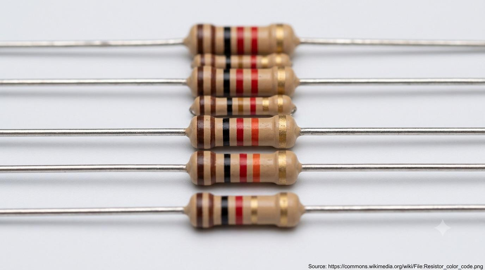

Chapter 02 · Passive Components
Resistors
A resistor is the simplest component there is: it turns voltage into current in a straight, predictable line — Ohm's law, always. Its only real complication is reading its value off its own body.
Reading the color bands
Most resistors are too small to print numbers on, so they wear colored bands instead. On a common 4-band resistor: the first two bands are significant digits, the third is a multiplier (how many zeros), and the fourth is tolerance — how far the real value may drift from the printed one.
Yellow–violet–red–gold → 4, 7, ×100 → 4700 Ω, ±5%.
| Color | Digit | Multiplier | Tolerance |
|---|---|---|---|
| Black | 0 | ×1 | — |
| Brown | 1 | ×10 | ±1% |
| Red | 2 | ×100 | ±2% |
| Yellow | 4 | ×10,000 | — |
| Green | 5 | ×100,000 | ±0.5% |
| Gold | — | ×0.1 | ±5% |
| Silver | — | ×0.01 | ±10% |

A real, in-focus close-up photograph (not an illustration) of several axial through-hole resistors lined up on a plain light background, showing their colored bands clearly. Prefer a photo from Wikimedia Commons under a free license (e.g. search "resistor color code" on commons.wikimedia.org); when you drop it in, replace the "Source:" line below the caption with the real Commons file page URL, in small font, as a courtesy attribution. Target size ~1280×720px, 16:9 landscape; keep the resistors centred with safe margins — it is letterboxed into a 16:9 box.
Generate or source this image, then drop the file here.
Series and parallel
| Wiring | Combined resistance | Rule of thumb |
|---|---|---|
| Series | R = R1 + R2 + … | Always larger than any single one |
| Parallel | 1/R = 1/R1 + 1/R2 + … | Always smaller than the smallest one |
Worked example
Two 100 Ω resistors in parallel: 1/R = 1/100 + 1/100 = 1/50 → R = 50 Ω. Adding a second path always makes it easier for current to flow overall — total resistance drops.
Why this matters: A resistor's job is almost always to set a current or divide a voltage on purpose — current-limiting an LED, biasing a transistor's base (Chapter 07), or forming the "R" half of the RC timer on the very next page.